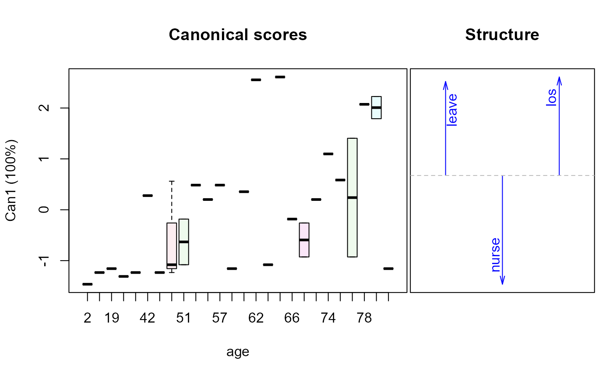
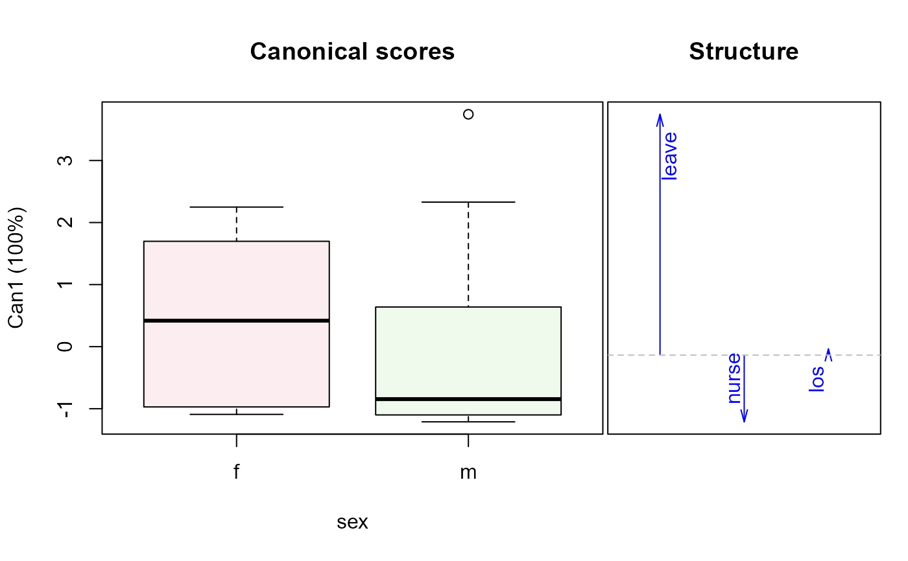

<!-- Generated by pkgdown: do not edit by hand -->
<!DOCTYPE html>
<html>
  <head>
  <meta charset="utf-8">
<meta http-equiv="X-UA-Compatible" content="IE=edge">
<meta name="viewport" content="width=device-width, initial-scale=1.0">

<title>Recovery from Elective Herniorrhaphy — Hernior • heplots</title>

<!-- jquery -->
<script src="https://code.jquery.com/jquery-3.1.0.min.js" integrity="sha384-nrOSfDHtoPMzJHjVTdCopGqIqeYETSXhZDFyniQ8ZHcVy08QesyHcnOUpMpqnmWq" crossorigin="anonymous"></script>
<!-- Bootstrap -->
<link href="https://maxcdn.bootstrapcdn.com/bootswatch/3.3.7/cerulean/bootstrap.min.css" rel="stylesheet" crossorigin="anonymous">

<script src="https://maxcdn.bootstrapcdn.com/bootstrap/3.3.7/js/bootstrap.min.js" integrity="sha384-Tc5IQib027qvyjSMfHjOMaLkfuWVxZxUPnCJA7l2mCWNIpG9mGCD8wGNIcPD7Txa" crossorigin="anonymous"></script>

<!-- Font Awesome icons -->
<link href="https://maxcdn.bootstrapcdn.com/font-awesome/4.6.3/css/font-awesome.min.css" rel="stylesheet" integrity="sha384-T8Gy5hrqNKT+hzMclPo118YTQO6cYprQmhrYwIiQ/3axmI1hQomh7Ud2hPOy8SP1" crossorigin="anonymous">


<!-- pkgdown -->
<link href="../pkgdown.css" rel="stylesheet">
<script src="../jquery.sticky-kit.min.js"></script>
<script src="../pkgdown.js"></script>
  
  
<!-- mathjax -->
<script src='https://mathjax.rstudio.com/latest/MathJax.js?config=TeX-AMS-MML_HTMLorMML'></script>

<!--[if lt IE 9]>
<script src="https://oss.maxcdn.com/html5shiv/3.7.3/html5shiv.min.js"></script>
<script src="https://oss.maxcdn.com/respond/1.4.2/respond.min.js"></script>
<![endif]-->


  </head>

  <body>
    <div class="container template-reference-topic">
      <header>
      <div class="navbar navbar-default navbar-fixed-top" role="navigation">
  <div class="container">
    <div class="navbar-header">
      <button type="button" class="navbar-toggle collapsed" data-toggle="collapse" data-target="#navbar">
        <span class="icon-bar"></span>
        <span class="icon-bar"></span>
        <span class="icon-bar"></span>
      </button>
      <a class="navbar-brand" href="../index.html">heplots</a>
    </div>
    <div id="navbar" class="navbar-collapse collapse">
      <ul class="nav navbar-nav">
        <li>
  <a href="../index.html">
    <span class="fa fa-home fa-lg"></span>
     
  </a>
</li>
<li>
  <a href="../reference/index.html">Reference</a>
</li>
      </ul>
      
      <ul class="nav navbar-nav navbar-right">
        
      </ul>
    </div><!--/.nav-collapse -->
  </div><!--/.container -->
</div><!--/.navbar -->

      
      </header>

      <div class="row">
  <div class="col-md-9 contents">
    <div class="page-header">
    <h1>Recovery from Elective Herniorrhaphy</h1>
    </div>

    
    <p>A data set on measures of post-operative recovery of 32 patients undergoing an
elective herniorrhaphy operation,  in relation to pre-operative measures.</p>
    

    <pre class="usage"><span class='fu'>data</span>(<span class='no'>Hernior</span>)</pre>
        
    <h2 class="hasAnchor" id="format"><a class="anchor" href="#format"></a>Format</h2>

    <p>A data frame with 32 observations on the following 9 variables.</p><dl class='dl-horizontal'>
    <dt><code>age</code></dt><dd><p>patient age</p></dd>
    <dt><code>sex</code></dt><dd><p>patient sex, a factor with levels <code>f</code> <code>m</code></p></dd>
    <dt><code>pstat</code></dt><dd><p>physical status (ignoring that associated with the operation). A 1-5
    	scale, with 1=perfect health, 5=very poor health.</p></dd>
    <dt><code>build</code></dt><dd><p>body build, a 1-5 scale, with 1=emaciated, 2=thin, 3=average, 4=fat, 5=obsese.</p></dd>
    <dt><code>cardiac</code></dt><dd><p>preoperative complications with heart, 1-4 scale,
    	with 1=none, 2=mild, 3=moderate, 4=severe.</p></dd>
    <dt><code>resp</code></dt><dd><p>preoperative complications with respiration, 1-4 scale,
    	with 1=none, 2=mild, 3=moderate, 4=severe.</p></dd>
    <dt><code>leave</code></dt><dd><p>condition upon leaving the recovery room, a 1-4 scale, with 
    	1=routine recovery, 2=intensive care for observation overnight,
    	3=intensive care, with moderate care required,
    	4=intensive care, with moderate care required.</p></dd>
    <dt><code>los</code></dt><dd><p>length of stay in hospital after operation (days)</p></dd>
    <dt><code>nurse</code></dt><dd><p>level of nursing required one week after operation, a 1-5 scale, with
    	1=intense, 2=heavy, 3=moderate, 4=light, 5=none (?); see Details</p></dd>
  </dl>
    
    <h2 class="hasAnchor" id="details"><a class="anchor" href="#details"></a>Details</h2>

    <p><code>leave</code>, <code>nurse</code> and <code>los</code> are outcome measures;
the remaining variables are potential predictors of recovery status.</p>
<p>The variable <code>nurse</code> is recorded as 1-4, with remaining (20) entries entered as
"-" in both sources.  It is not clear whether this means "none" or NA.  
The former interpretation was used in constructing the R data frame,
so <code>nurse==5</code> for these observations. Using
<code>Hernior$nurse[Hernior$nurse==5] &lt;- NA</code> would change to the other
interpretation, but render <code>nurse</code> useless in a multivariate analysis.</p>
<p>The ordinal predictors could instead be treated as factors, and there are also
potential interactions to be explored.</p>
    
    <h2 class="hasAnchor" id="source"><a class="anchor" href="#source"></a>Source</h2>

    <p>Mosteller, F. and Tukey, J. W. (1977), <em>Data analysis and regression</em>,
Reading, MA: Addison-Wesley. Data Exhibit 8, 567-568.
Their source: A study by B. McPeek and J. P. Gilbert of the Harvard
Anesthesia Center.</p>
    
    <h2 class="hasAnchor" id="references"><a class="anchor" href="#references"></a>References</h2>

    <p>Hand, D. J., Daly, F., Lunn, A. D., McConway, K. J. and Ostrowski, E. (1994),
<em>A Handbook of Small Data Sets</em>, Number 484, 390-391.</p>
    

    <h2 class="hasAnchor" id="examples"><a class="anchor" href="#examples"></a>Examples</h2>
    <pre class="examples"><div class='input'><span class='fu'>str</span>(<span class='no'>Hernior</span>)</div><div class='output co'>#&gt; 'data.frame':	32 obs. of  9 variables:
#&gt;  $ age    : int  78 60 68 62 76 76 64 74 68 79 ...
#&gt;  $ sex    : Factor w/ 2 levels "f","m": 2 2 2 2 2 2 2 1 2 1 ...
#&gt;  $ pstat  : int  2 2 2 3 3 1 1 2 3 2 ...
#&gt;  $ build  : int  3 3 3 5 4 3 2 3 4 2 ...
#&gt;  $ cardiac: int  1 2 1 3 3 1 1 2 2 1 ...
#&gt;  $ resp   : int  1 2 1 1 2 1 2 2 1 1 ...
#&gt;  $ leave  : int  2 2 1 1 2 1 1 1 1 2 ...
#&gt;  $ los    : int  9 4 7 35 9 7 5 16 7 11 ...
#&gt;  $ nurse  : num  3 5 4 3 4 5 5 3 5 3 ...</div><div class='input'><span class='no'>Hern.mod</span> <span class='kw'>&lt;-</span> <span class='fu'>lm</span>(<span class='fu'>cbind</span>(<span class='no'>leave</span>, <span class='no'>nurse</span>, <span class='no'>los</span>) ~
               <span class='no'>age</span> + <span class='no'>sex</span> +  <span class='no'>pstat</span> +  <span class='no'>build</span> + <span class='no'>cardiac</span> + <span class='no'>resp</span>, <span class='kw'>data</span><span class='kw'>=</span><span class='no'>Hernior</span>)
<span class='fu'>Anova</span>(<span class='no'>Hern.mod</span>, <span class='kw'>test</span><span class='kw'>=</span><span class='st'>"Roy"</span>) <span class='co'># actually, all tests are identical</span></div><div class='output co'>#&gt; 
#&gt; Type II MANOVA Tests: Roy test statistic
#&gt;         Df test stat approx F num Df den Df  Pr(&gt;F)  
#&gt; age      1   0.16620   1.2742      3     23 0.30668  
#&gt; sex      1   0.02681   0.2055      3     23 0.89150  
#&gt; pstat    1   0.50028   3.8355      3     23 0.02309 *
#&gt; build    1   0.34506   2.6455      3     23 0.07318 .
#&gt; cardiac  1   0.29507   2.2622      3     23 0.10820  
#&gt; resp     1   0.32969   2.5277      3     23 0.08245 .
#&gt; ---
#&gt; Signif. codes:  0 <U+0091>***<U+0092> 0.001 <U+0091>**<U+0092> 0.01 <U+0091>*<U+0092> 0.05 <U+0091>.<U+0092> 0.1 <U+0091> <U+0092> 1</div><div class='input'><span class='co'># test overall regression</span>
<span class='fu'>linearHypothesis</span>(<span class='no'>Hern.mod</span>, <span class='fu'>c</span>(<span class='st'>"age"</span>, <span class='st'>"sexm"</span>, <span class='st'>"pstat"</span>, <span class='st'>"build"</span>, <span class='st'>"cardiac"</span>, <span class='st'>"resp"</span>))</div><div class='output co'>#&gt; 
#&gt; Sum of squares and products for the hypothesis:
#&gt;            leave       nurse        los
#&gt; leave  5.4553174  -0.9980793   2.454547
#&gt; nurse -0.9980793   5.8138316 -42.887940
#&gt; los    2.4545475 -42.8879402 454.997603
#&gt; 
#&gt; Sum of squares and products for error:
#&gt;            leave       nurse        los
#&gt; leave  3.7634326   0.8730793  -9.079547
#&gt; nurse  0.8730793  17.6861684 -75.612060
#&gt; los   -9.0795475 -75.6120598 790.502397
#&gt; 
#&gt; Multivariate Tests: 
#&gt;                  Df test stat approx F num Df   den Df     Pr(&gt;F)    
#&gt; Pillai            6 1.1019849 2.419161     18 75.00000 0.00413563 ** 
#&gt; Wilks             6 0.2173439 2.604648     18 65.53911 0.00252395 ** 
#&gt; Hotelling-Lawley  6 2.2679660 2.729959     18 65.00000 0.00162850 ** 
#&gt; Roy               6 1.5543375 6.476406      6 25.00000 0.00032318 ***
#&gt; ---
#&gt; Signif. codes:  0 <U+0091>***<U+0092> 0.001 <U+0091>**<U+0092> 0.01 <U+0091>*<U+0092> 0.05 <U+0091>.<U+0092> 0.1 <U+0091> <U+0092> 1</div><div class='input'><span class='co'># joint test of age, sex &amp; caridac</span>
<span class='fu'>linearHypothesis</span>(<span class='no'>Hern.mod</span>, <span class='fu'>c</span>(<span class='st'>"age"</span>, <span class='st'>"sexm"</span>, <span class='st'>"cardiac"</span>))</div><div class='output co'>#&gt; 
#&gt; Sum of squares and products for the hypothesis:
#&gt;           leave      nurse        los
#&gt; leave  1.113783  -1.756501   6.369289
#&gt; nurse -1.756501   3.488577 -15.547576
#&gt; los    6.369289 -15.547576  78.609719
#&gt; 
#&gt; Sum of squares and products for error:
#&gt;            leave       nurse        los
#&gt; leave  3.7634326   0.8730793  -9.079547
#&gt; nurse  0.8730793  17.6861684 -75.612060
#&gt; los   -9.0795475 -75.6120598 790.502397
#&gt; 
#&gt; Multivariate Tests: 
#&gt;                  Df test stat approx F num Df   den Df   Pr(&gt;F)  
#&gt; Pillai            3 0.3826974 1.218485      9 75.00000 0.296709  
#&gt; Wilks             3 0.6305421 1.301115      9 56.12656 0.257126  
#&gt; Hotelling-Lawley  3 0.5649409 1.360043      9 65.00000 0.224709  
#&gt; Roy               3 0.5249507 4.374589      3 25.00000 0.013162 *
#&gt; ---
#&gt; Signif. codes:  0 <U+0091>***<U+0092> 0.001 <U+0091>**<U+0092> 0.01 <U+0091>*<U+0092> 0.05 <U+0091>.<U+0092> 0.1 <U+0091> <U+0092> 1</div><div class='input'>
<span class='no'>clr</span> <span class='kw'>&lt;-</span> <span class='fu'>c</span>(<span class='st'>"red"</span>, <span class='st'>"darkgray"</span>, <span class='st'>"blue"</span>, <span class='st'>"darkgreen"</span>, <span class='st'>"magenta"</span>, <span class='st'>"brown"</span>, <span class='st'>"black"</span>)
<span class='fu'><a href='heplot.html'>heplot</a></span>(<span class='no'>Hern.mod</span>, <span class='kw'>col</span><span class='kw'>=</span><span class='no'>clr</span>)</div><div class='img'></div><div class='input'><span class='fu'>pairs</span>(<span class='no'>Hern.mod</span>, <span class='kw'>col</span><span class='kw'>=</span><span class='no'>clr</span>)</div><div class='img'></div><div class='input'>
<span class='co'>## Enhancing the pairs plot ...</span>
<span class='co'># create better variable labels</span>
<span class='no'>vlab</span> <span class='kw'>&lt;-</span> <span class='fu'>c</span>(<span class='st'>"LeaveCondition\n(leave)"</span>, <span class='st'>"NursingCare\n(nurse)"</span>, <span class='st'>"LengthOfStay\n(los)"</span>)
<span class='co'># Add ellipse to test all 5 regressors simultaneously</span>
<span class='no'>hyp</span> <span class='kw'>&lt;-</span> <span class='fu'>list</span>(<span class='st'>"Regr"</span> <span class='kw'>=</span> <span class='fu'>c</span>(<span class='st'>"age"</span>, <span class='st'>"sexm"</span>, <span class='st'>"pstat"</span>, <span class='st'>"build"</span>, <span class='st'>"cardiac"</span>, <span class='st'>"resp"</span>))
<span class='fu'>pairs</span>(<span class='no'>Hern.mod</span>, <span class='kw'>hypotheses</span><span class='kw'>=</span><span class='no'>hyp</span>, <span class='kw'>col</span><span class='kw'>=</span><span class='no'>clr</span>, <span class='kw'>var.labels</span><span class='kw'>=</span><span class='no'>vlab</span>)</div><div class='img'></div><div class='input'>
<span class='co'>## Views in canonical space for the various predictors</span>
<span class='kw'>if</span> (<span class='fu'>require</span>(<span class='no'>candisc</span>)) {
        <span class='no'>Hern.canL</span> <span class='kw'>&lt;-</span> <span class='fu'><a href='http://www.rdocumentation.org/packages/candisc/topics/candiscList'>candiscList</a></span>(<span class='no'>Hern.mod</span>)
        <span class='fu'>plot</span>(<span class='no'>Hern.canL</span>, <span class='kw'>term</span><span class='kw'>=</span><span class='st'>"age"</span>)
        <span class='fu'>plot</span>(<span class='no'>Hern.canL</span>, <span class='kw'>term</span><span class='kw'>=</span><span class='st'>"sex"</span>)
        <span class='fu'>plot</span>(<span class='no'>Hern.canL</span>, <span class='kw'>term</span><span class='kw'>=</span><span class='st'>"pstat"</span>)  <span class='co'># physical status</span>
}</div><div class='output co'>#&gt; <span class='message'>Loading required package: candisc</span></div><div class='input'>
</div></pre>
  </div>
  <div class="col-md-3 hidden-xs hidden-sm" id="sidebar">
    <h2>Contents</h2>
    <ul class="nav nav-pills nav-stacked">
      
      <li><a href="#format">Format</a></li>

      <li><a href="#details">Details</a></li>

      <li><a href="#source">Source</a></li>

      <li><a href="#references">References</a></li>
      
      <li><a href="#examples">Examples</a></li>
    </ul>

  </div>
</div>

      <footer>
      <div class="copyright">
  <p>Developed by John Fox, Michael Friendly.</p>
</div>

<div class="pkgdown">
  <p>Site built with <a href="http://hadley.github.io/pkgdown/">pkgdown</a>.</p>
</div>

      </footer>
   </div>

  </body>
</html>
